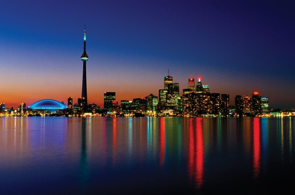
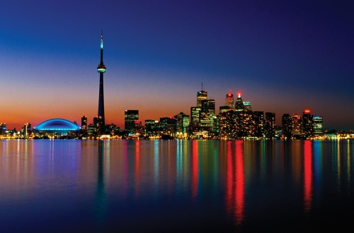

University of Kostin Co-op Program
Welcome to the Team Rochester website! We’ve partnered up with the University of Kostin to create a Co-op program for students in different areas of studies including Natural Science, Social Science, and Humanities. In the Co-op program, students will have the opportunity to travel to a different City in North America and be able to temporarily work for a company and do research in areas related to their major. This will assist students from the University of Kostin to gain experience in their fields before graduating with their Bachelor’s Degree. To qualify for our Co-op program, students must have at least a 2.7 Overall GPA and a Junior. The Cities/Countries that we offer are New Orleans, Louisiana, USA; Toronto, Ontario, Canada; New York City, New York, USA; and San Franscisco, California, USA. On our website feel free to explore the information of the different cities if you believe one of them is the location for you! Click on the name of each city to learn more about what is has

 


New Orleans
New Orleans is a Louisiana city on the Mississippi River, near the Gulf of Mexico. Nicknamed the "Big Easy," it's known for its round-the-clock nightlife, vibrant live-music scene and spicy, singular cuisine reflecting its history as a melting pot of French, African and American cultures. Embodying its festive spirit is Mardi Gras, the late-winter carnival famed for raucous costumed parades and street parties.
New York City
New York City consists of five boroughs, which are five separate counties. Each borough has a unique culture and could be a large city in its own right. Within each borough individual neighborhoods, some several square miles in size, and others only a few blocks in size, have personalities lauded in music and film.The famous island between the Hudson and East Rivers, with many diverse and unique neighborhoods. Manhattan is home to the Empire State Building in Midtown, Central Park, Times Square, Wall Street, Harlem, and the trendy neighborhoods of Greenwich Village and SoHo
San Francisco
San Francisco, officially the City and County of San Francisco, is a cultural, commercial, and financial center of Northern California. San Francisco is the 16th most populous city in the United States, and the fourth most populous in California, with 881,549 residents as of 2019. It covers an area of about 46.89 square miles (121.4 km2), mostly at the north end of the San Francisco Peninsula in the San Francisco Bay Area, making it the second most densely populated large U.S. city, and the fifth most densely populated U.S. county, behind only four of the five New York City boroughs.
Toronto
Toronto is the capital city of the Canadian province of Ontario. With a recorded population of 2,731,571 in 2016, it is the most populous city in Canada and the fourth most populous city in North America. The city is the anchor of the Golden Horseshoe, an urban agglomeration of 9,245,438 people (as of 2016) surrounding the western end of Lake Ontario, while the Greater Toronto Area (GTA) proper had a 2016 population of 6,417,516. Toronto is an international center of business, finance, arts, and culture, and is recognized as one of the most multicultural and cosmopolitan cities in the world.